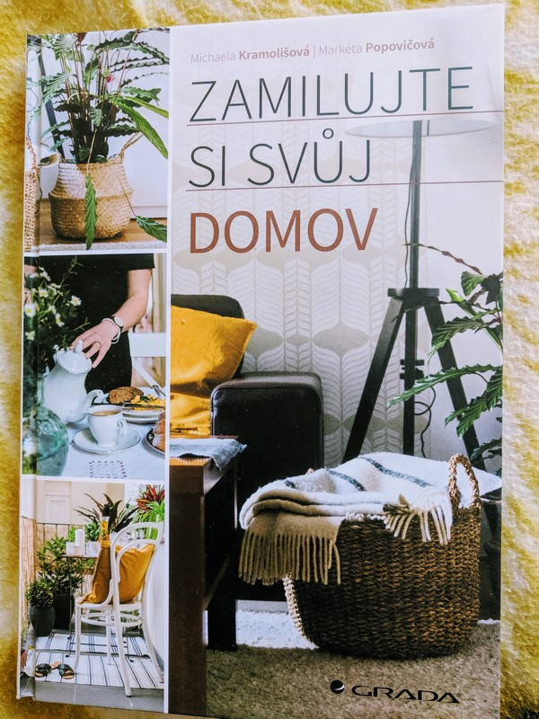

Autorky této publikace už nějakou dobu sleduji na Instagramu, kde se pod profilem “Mámami” dělí o své tipy v péči o domácnost a organizaci domova. Co si budeme povídat, od té doby, co jsem na mateřské a trávím doma většinu svého času, mnohem častěji přemýšlím nad tím, co by se u nás dalo vylepšit a čím se vůbec chci obklopovat. Tak nějak celkově inklinuji k minimalismu, ledacos už mě naučila mnohokrát opěvovaná Terapie domova a postupně zjišťuju, jak výrazně má dobrá organizace a uspořádání věcí vliv na jejich údržbu.
Asi nikdo netouží trávit veškerý svůj volný čas úklidem. " Zamilujte si svůj domov" se tak stala publikací, do níž jsem vkládala naděje na další vylepšení toho našeho “doma”. Netvrdím, že se v ní dozvíte něco úplně revolučního, ale jako inspirace fungovala každopádně. Kniha je psaná tak příjemným a motivujícím jazykem, že vás doslova vybízí uvařit si k četbě hrnek bylinkového čaje a jen tak relaxovat a snít o tom vašem dokonalém domově… a pak se z gauče zvednout a aspoň trochu vylepšit ten aktuální stav, ať už je jakýkoliv :-)
Co pro mě bylo také hodně povzbuzující - autorky (obě trojnásobné mámy) často zmiňují, jak se v tom během jejich vlastní mateřské mnohdy plácaly, což tak nějak podvědomě tušíte, ale stejně vás to naplní nadějí v lepší a uklizenější zítřky i vašeho domova :) Celkově je podle mě kniha tvořena převážně pro maminky na mateřské. Pokud bych se nacházela v jiné životní etapě, asi bych vyhledala jinou publikaci s touto tematikou. Takto si ale ráda přečtu zkušenosti někoho, kdo už má tu fázi zvelebování domova s dětmi za zády odžitou. Zároveň ale v " Zamilujte si svůj" domov určitě najdete také pasáže, k nimž se dá po čase znovu vracet.
Příjemným bonusem publikace je i hezká grafická stránka a přehledné rozčlenění kapitol. Autorky se věnují např. denním rutinám, organizaci dle jednotlivých místností, ale také tomu, jak zabránit vyhoření, když už vám to doma někdy všechno přerůstá přes hlavu.

Věřím, že kniha nebude pro každého, ale mě osobně nezklamala a ráda s ní budu i v budoucnu krůček po krůčku vylepšovat to naše “doma”. Za poskytnutí knihy k recenzi děkuji internetovému knihkupectví Megaknihy.cz.